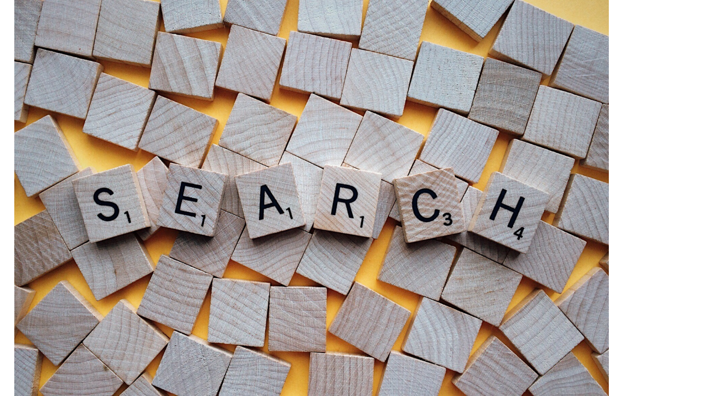
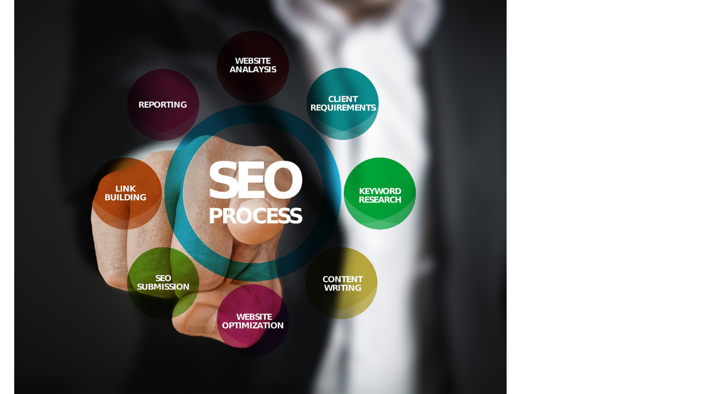

Bisnis Online merupakan salah satu peluang besar pendapatan di saat pandemi terlebih lagi sekarang kita hidup di era transformasi digital atau teknologi.
Untuk memulai bisnis online tentu kita harus mempunyai produk yang relavan untuk di jual ke konsumen, membangun website online, serta mengerti teknik pemasaran atau SEO. Banyak sekali produk yang bisa kita jual di saat pandemi antara lain, menjual masker yang aman untuk digunakan, menjual face shield, dan lain lain. Menjual itu saja tidak akan cukup, karena menjual barang seperti itu hanya akan laku di masanya saja.
Pada pembahasan kali ini kita akan membahas 3 hal penting dalam berbisnis online.

Produk merupakan salah satu hal yang paling penting, mengapa? karena tujuan utama seorang pembeli atau konsumen adalah mencari produk yang mereka inginkan. Kita sebagai penjual harus memberikan produk yang mereka butuhkan dan tidak lupa dengan kualitas nya, karena konsumen atau pembeli sangat suka dengan produk yang kualitasnya baik atau bagus. Misalnya kita ingin menjual pakaian, kita harus membuat design yang bagus yang banyak di minati pembeli, biasanya untuk design yang diminati tidak terlalu ramai atau nora karena di zaman sekarang pembeli suka design yang simple dan berkualitas.
Jika kita ingin berbisnis online kita harus konsisten, produk apa yang ingin kita jual? jika kita ingin berbisnis di bidang fashion, tentu kita harus menjual Baju, Jaket, Celana, Hoodie, dan lain lain. Jika kita ingin berbisnis tanpa produk fisik contoh nya adalah seperti menjual design atau menjual karya karya yang bisa kamu ciptakan sendiri, atau jasa membuat website bahkan aplikasi mobile jika kamu memiliki keahlian di bidang tersebut. Tentukan produk yang ingin kalian tawarkan kepada konsumen, jika kalian masih bingung produk apa yang ingin kalian jual, kalian bisa mencari trend produk terlaris yang banyak di butuhkan konsumen.
Mengapa Wordpress? karena Wordpress mempunyai banyak plugin plugin menarik yang bisa kalian gunakan untuk membuat website. dengan wordpress kalian bisa membuat berbagai macam jenis website seperti E-Commerce Website Online Store, Blog & News, Hotel Booking, dan lain lain. Bagaimana caranya, saya kan gabisa ngoding? Tenang karena itu plugin wordpress ada, dan wordpress juga menyediakan banyak tema yang bisa kalian gunakan.
Bagaimana cara saya menggunakan Wordpress saya? jika kalian membeli domain biasa nya ada di spesifikasinya sebelum anda membeli dan biasanya untuk domain yang berbayar 97% menyediakan Wordpress. Bagaimana saya membuat Web Online saya? plugin apa yang harus saya gunakan? Untuk membuat website online saya sarankan anda mencoba menggunakan plugin bernama Woo Commerce, bisa kalian cek tutorial nya di youtube, karena sudah banyak sekali yang menggunakan plugin tersebut.

SEO adalah singkatan dari "search engine optimization" (pengoptimalan mesin telusur) atau "search engine optimizer". Penggunaan jasa SEO adalah keputusan besar yang dapat meningkatkan peringkat situs Anda dan menghemat waktu, tapi juga berisiko tinggi terhadap situs dan reputasi. SEO bertujuan untuk menempatkan sebuah situs pada posisi teratas pada sebuah mesin pencari berdasarkan kata kunci tertentu. Dengan demikian bila suatu situs atau blog berada posisi teratas dalam hasil pencarian maka memiliki peluang yang besar untuk didatangi pengunjung. SEO yang merupakan singkatan dari Search Engine Optimization atau optimasi mesin pencari adalah sebuah suatu strategi atau serangkaian teknik yang sistematis untuk menempatkan website atau blog berada di halaman utama SERP (Search Engine Result Page) dan potensial sesuai dengan keyword yang ditentukan.
Teknik SEO offpage, yaitu teknik yang dilakukan di luar website atau blog, salah satunya adalah mencari backlink. Semakin banyak backlink berkualitas, semakin membuat website bagus pada hasil mesin pencari (SERP). SERP (Search Engine Result Page) atau dalam bahasa Indonesia adalah Halaman Hasil Mesin Pencari. Ada juga pengertian SEO Off Page dan SEO On Page:
SEO off page adalah langkah optimasi SEO yang dilakukan di luar konten atau website. Jika di SEO on page Anda hanya berkutat pada faktor-faktor SEO internal website, SEO off page menuntut Anda untuk mengoptimasinya dari faktor-faktor eksternal.
SEO ON PAGE adalah proses SEO yang dilakukan di bagian dalam atau internal situs web saja. Proses mengoptimalkan SEO ON PAGE ini hanya dilakukan pada optimasi situs saja dengan tanpa melibatkan pihak luar. Teknik SEO ON PAGE ini adalah salah satu faktor terbesar untuk menentukan rangking situs.
Adapun 7 faktor penting dalam SEO yaitu: